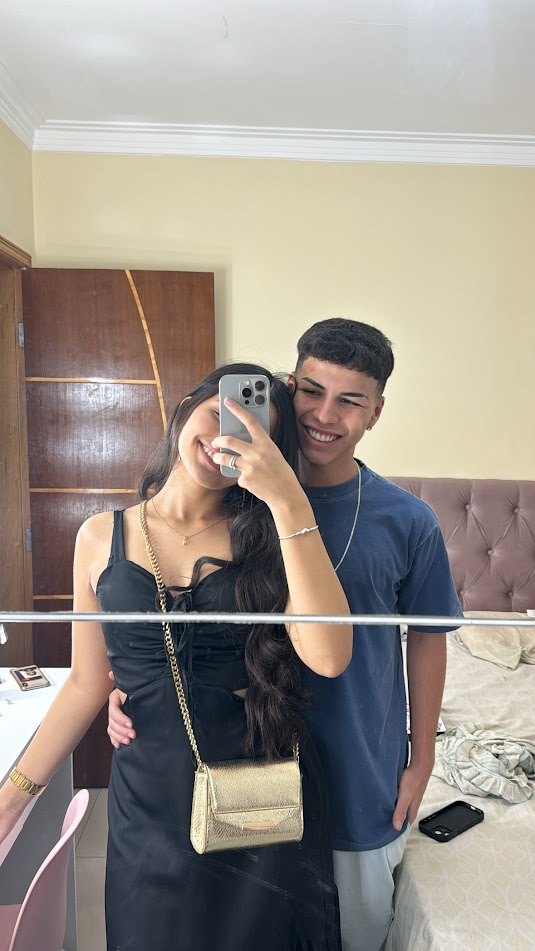
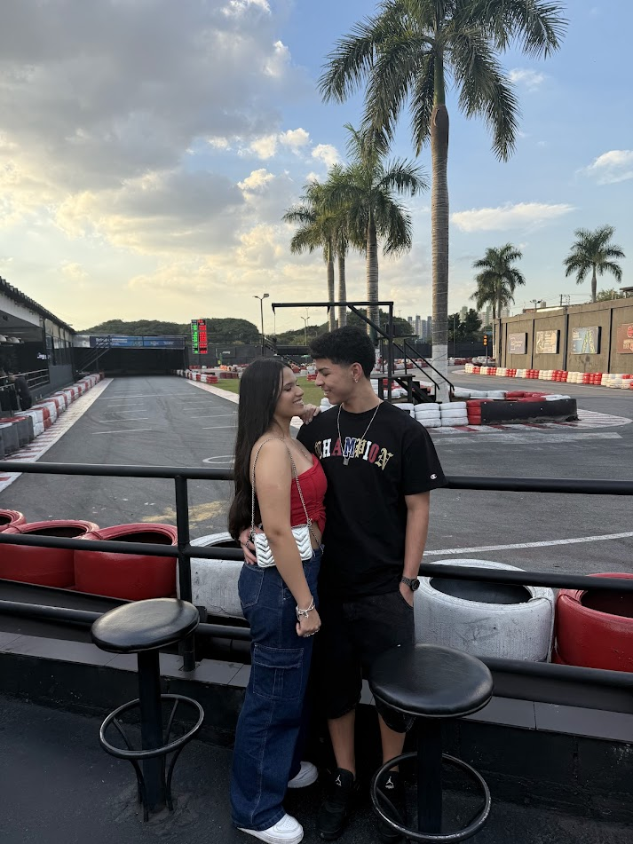
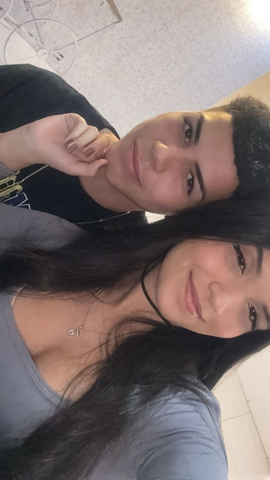
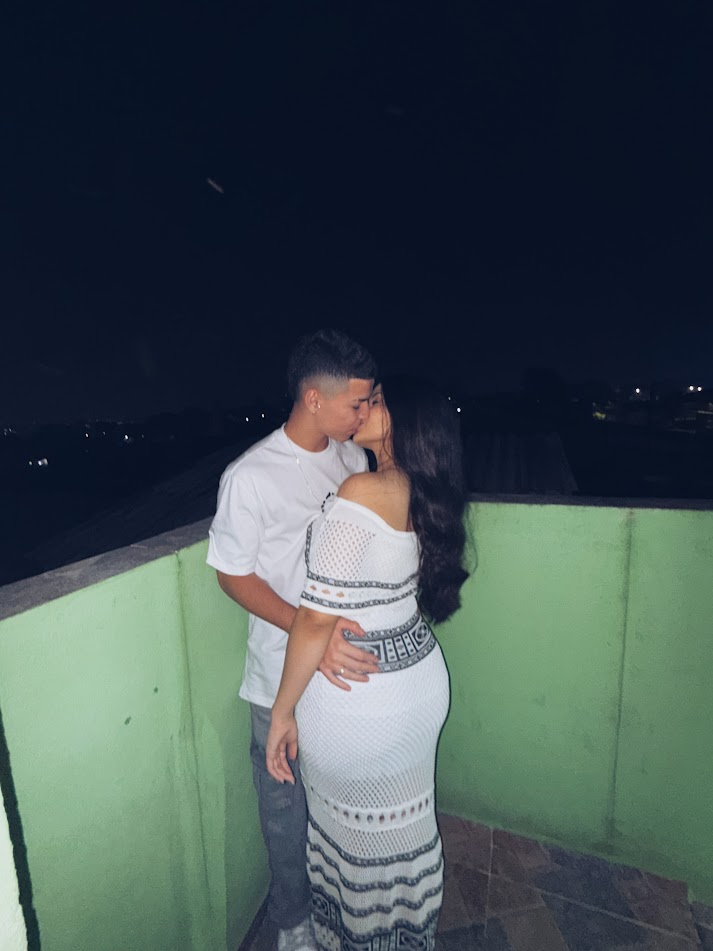
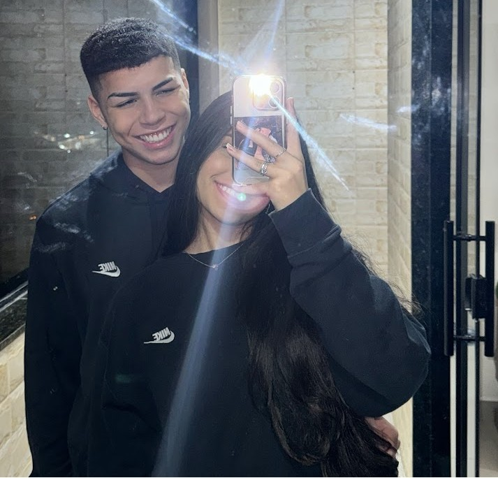
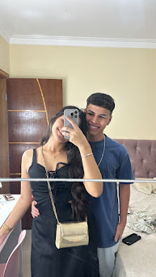
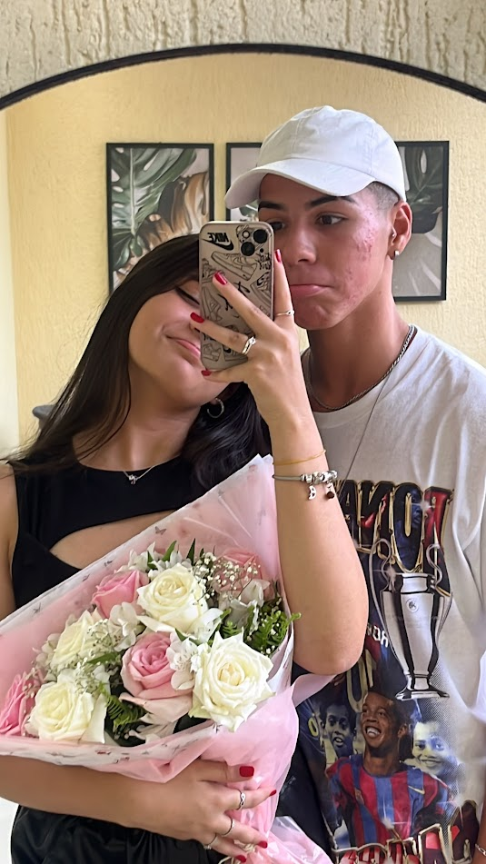
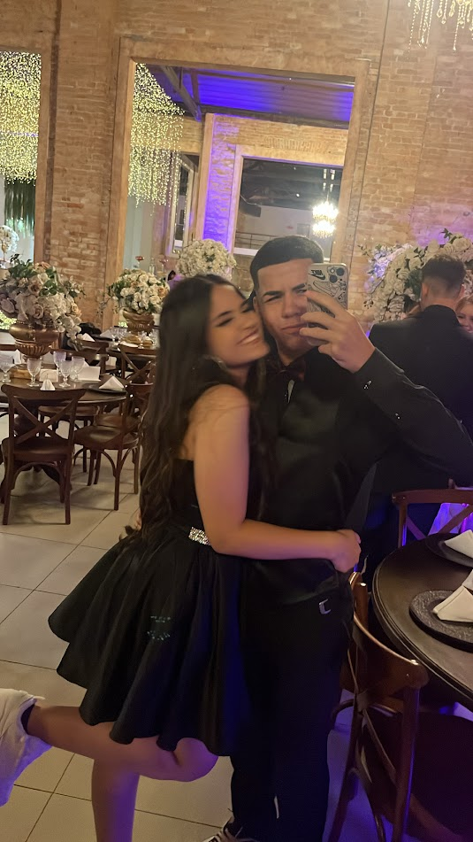
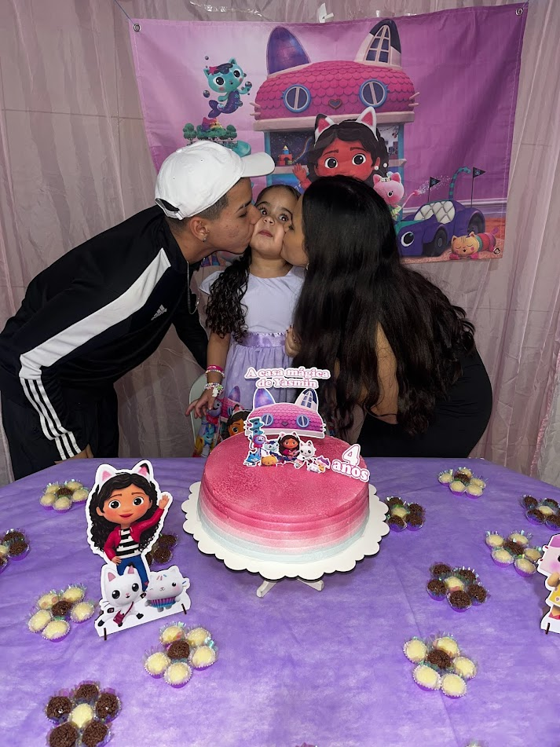
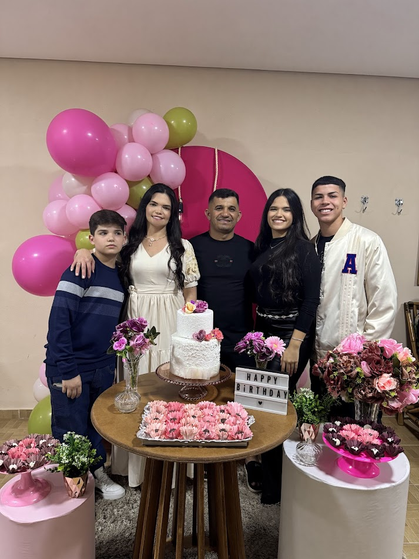

50 MOTIVOS PARA EU TE AMAR
1. Seu sorriso
me encanta toda vez.
2. Seus olhos
amo o jeito que eles brilham ao olhar pra mim.
3. Sua gentileza
me fez apaixonar por você.
4. Seu abraço
é o meu lugar favorito no mundo.
5. Seu carinho
acalma meu coração.
6. Seu cheiro
fica na minha memória o tempo todo.
7. Sua inteligência
me inspira todos os dias.
8. Seu cuidado comigo
me faz sentir amado de verdade.
9. Seu toque
desperta algo mágico em mim hihi.
10. Seu bom humor
transforma qualquer dia ruim em dia bom.



11. Seu apoio
me dá força pra continuar.
12. Seu jeito de falar comigo
me faz sentir especial.
13. Seu coração bom
me mostra o que é amor de verdade.
14. Seu jeitinho
me faz te amar mais a cada dia.
15. Você é a melhor definição de companheira
sempre está ao meu lado.
16. Seu jeito bobo
me faz rir e te amar ainda mais.
17. Seu jeito de se importar comigo
me emociona.
18. Seu jeito de fazer planos comigo
me dá esperança no futuro.
19. você é a minha melhor amiga
você é tudo na minha vida.
20. Seu amor
é o melhor presente que a vida me deu.

21. Sua dedicação
me inspira a te amar mais todos os dias.
22. Seu modo de me fazer sentir único
me envolve em um amor cada vez maior.
23. Você me faz rir
você tira os meus melhores sorrisos.
24. Seu sorriso nos momentos mais simples
acende em mim um amor sem fim.
25. Eu amo olhar para você e pensar: encontrei
você é a mulher da minha vida.
26. Seu jeitinho chorona
me faz entender como você é.
27. Porque posso confiar em você
você é meu porto seguro.
28. Você sabe o que fazer quando estou de mau humor
glu glu glu kkkkkk.
29. Por que vocÊ faz minha inicial na unha
Fica linda.
30. Por que você faz os melhores pratos
tá pronta pra casar.


31. Você me alegra nos meus dias mais difíceis
e nos mais fáceis também.
32. Você me traz inspiração
sou seu maior fã
33. Seu jeitinho fofa
derrete meu coração todos os dias.
34. Seu amor sem medidas
me ensina a amar de verdade.
35. Sua animação
renova meu sentimento por você.
36. Seu charme natural
me faz apaixonar mais a cada instante.
37. Seu acolhimento
me faz sentir em casa com você.
38. Seu bom gosto
me impressiona e me atrai mais ainda.
39. Seu jeito de sonhar
me faz sonhar com você ao meu lado.
40. Seu brilho próprio
ilumina o meu amor por você.


41. Porque você me ensinou muitas coisas sobre relacionamento
sou outra pessoa com você.
42. Seu jeito estressadinha
me faz te querer te irritar por toda a vida.
43. Me fazer surpresas
me mostra que sou especial na sua vida.
44. Quando estamos de "love"
me apaixono todas as veses.
45. Me fazer ter novas experiências na vida
amo falar as primeiras coisas que fiz com você.
46. Seu gosto musical
só kyan no ouvido.
47. Sua firmeza nas decisões
me passa segurança e mais amor.
48. Me apoiar em todas as fases
desde coach até jogador até estudante.
49. Seu modo de fazer tudo parecer simples
torna o amor leve.
50. Mostrar que me ama
me sinto a pessoa mais sortuda do mundo.

